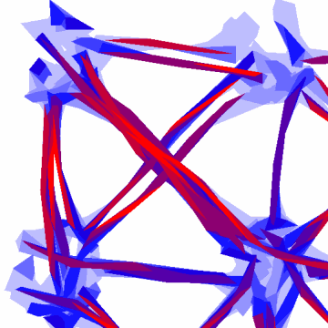

T-LoCoH (Time Local Convex Hull) is a method for constructing home ranges and exploring spatio-temporal patterns in movement data. It is built upon the LoCoH method but contains with new analytical functions for data that have time values attached (e.g., movement data).
T-LoCoH can analyze any set of point data (with or without time stamps), but it has been tailored for data collected at regular intervals from a GPS device, such as GPS collars used in wildlife tracking studies. T-LoCoH uses the time information from each location to produce models of space-use that have strong fidelity to temporal partitioning strategies.
T-LoCoH can generate home ranges models that differentiate internal space not only by how often the animal was seen there (the traditional approach), but also how the animal used space in terms of time-use patterns and behavior mode. You can think of this as behavior maps.
T-LoCoH is not a one-click solution. To use T-LoCoH effectively, you should understand your research question, have some basic knowledge about the study system, and understand how the method works. The tutorial below does a pretty good job explaining how to use T-LoCoH intelligently for specific types of questions and applications. If you are looking for a quick and dirty home range construction method, we suggest you try the Kernel method or one of the other methods from the AdehabitatHR package.
To install T-LoCoH, type the command below at the R console. If you get stuck, see the steps for manual installation.
install.packages("tlocoh", dependencies=TRUE, repos=c("http://R-Forge.R-project.org", "http://cran.cnr.berkeley.edu"))
require(tlocoh)
Note: the above command uses two repositories because T-LoCoH is on R-Forge while the dependent packages are on CRAN mirrors. If you are not in the US, you can substitute an alternate CRAN repository.
Windows users: if you have trouble installing the 'gpclib' package, see step two in the manual installation instructions.

The image above illustrates:
Answer: See Figure 10 in the paper.